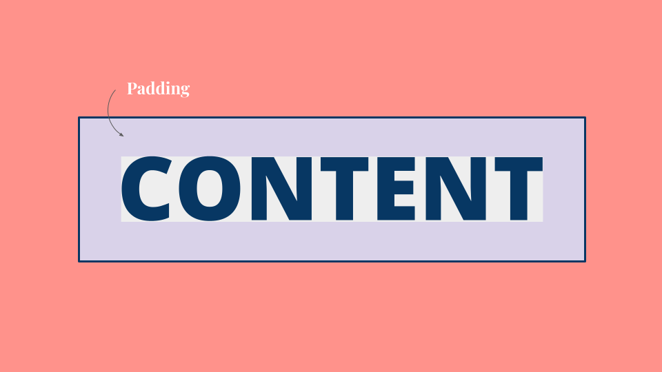

Technical CSS Concepts –
Sprint Two
The Box Model – Margin, Padding, Border
Every box has three available properties that can be adjusted to control its appearance: Border, Margin and Padding. These things usually surround the content of the box. Show below is the content sitting without any setting applied to it. I have created some examples for you to see the differences between these different properties.
Border
Every box has a border (even if it is not visible or is specified to be 0 pixels wide). The border separates the edge of one box from another. Border can be changed to be dashed, dotted or wavy and its thickness can be altered, as well as its colour.
Padding
Padding is the space between the border of a box and any content contained within it. Adding padding can increase the readability of its contents. Padding is often used to create the space between the content of the box and the border which allows for greater breathing room. This results in better legibility overall.
Margin
Margins sit outside the edge of the border. You can set the width of a margin to create a gap between the borders of two adjacent boxes. Margin is especially useful for creating vertical spacing between sections on your website.